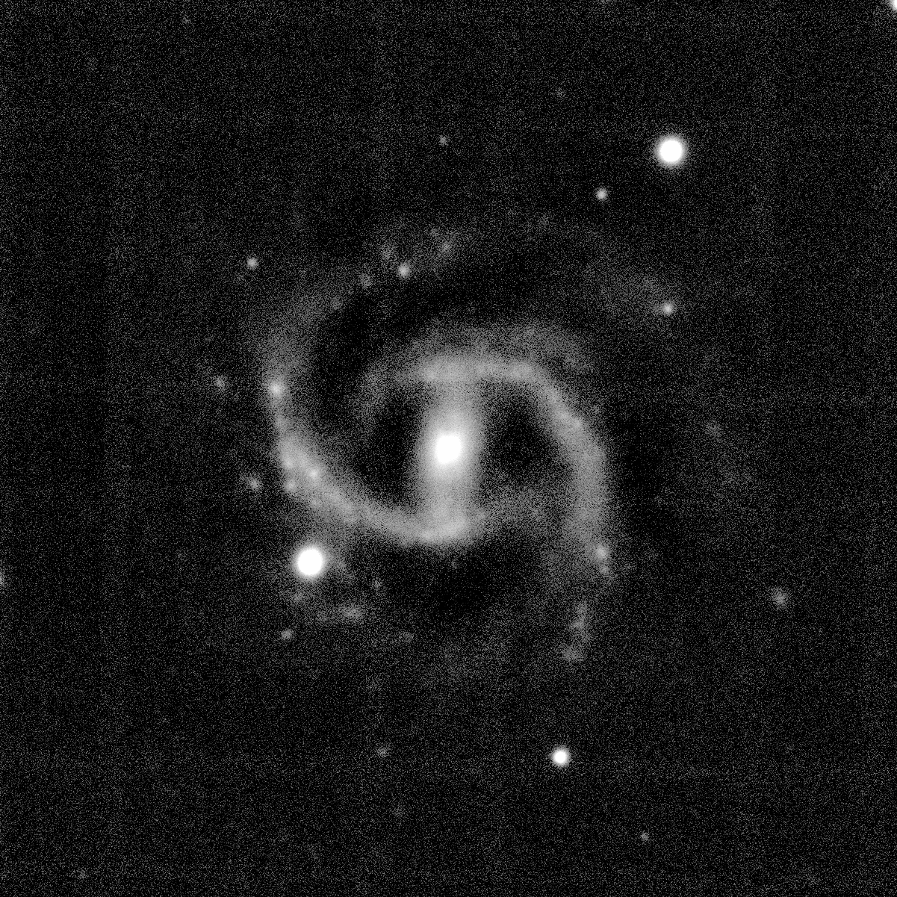
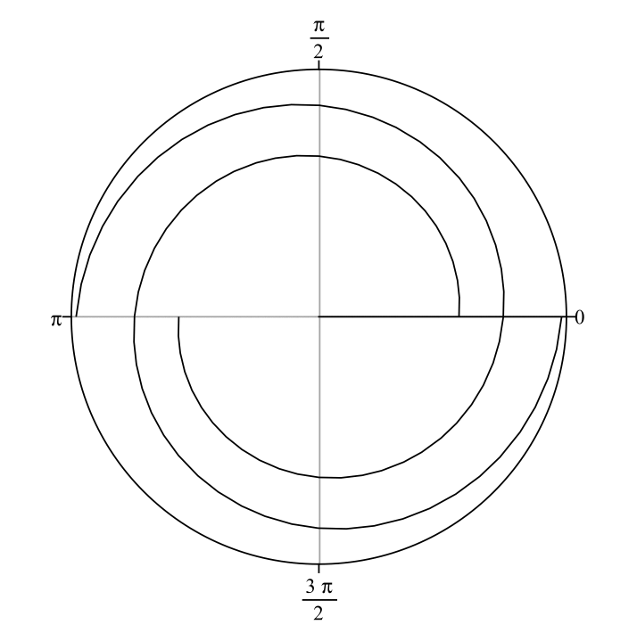
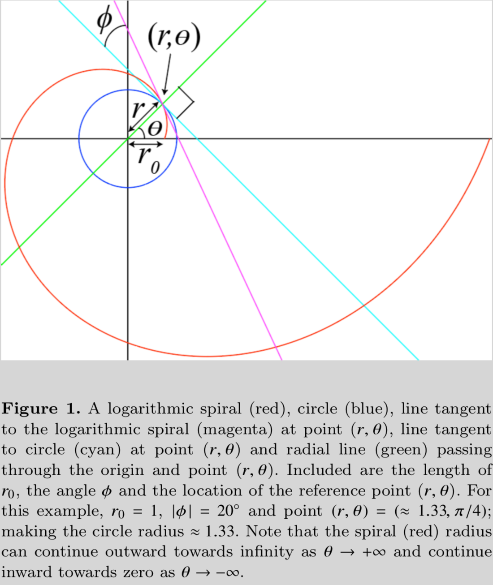
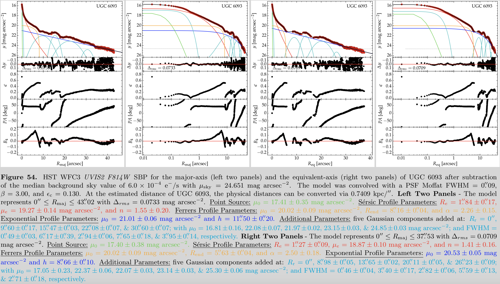
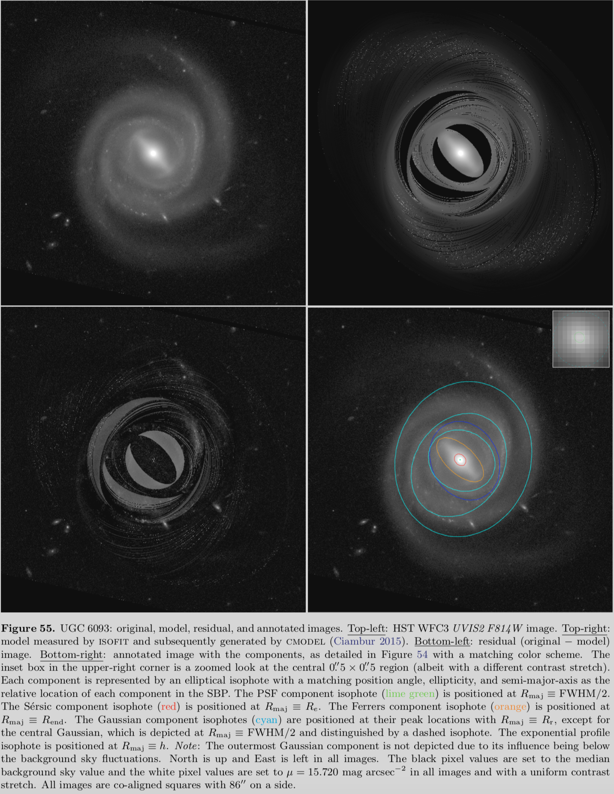
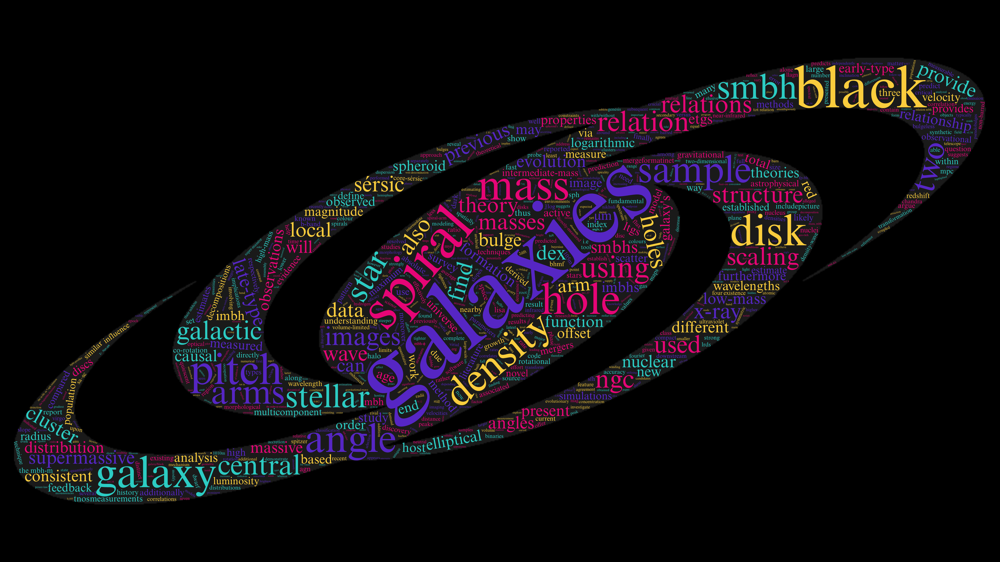

Research
Contents
- Proprietary Images
- Commissioned Art
- Measuring the Logarithmic Spiral-arm Pitch Angle of Spiral Galaxies
- Multicomponent Decomposition of Galaxies
- Black Hole Mass Scaling Relations
- What Causes Spiral Structure in Galaxies?
- Repositories, Metrics, Visualizations, and Academic Profiles
- Peer-reviewed Publications
- Ph.D. Dissertation
- Other Papers
- Acknowledgments
- Magazine Article
- Software
- Erdős Number
- Research Affiliations
- Collaborators
- Curriculum Vitæ
- Conference Photos
Proprietary Images
-

- 
-

-

-

-

-

-

-

Images of face-on spiral galaxies, taken during the nights of November 8-10, 2013, on the 3.5m WIYN telescope.
Commissioned Art

Image by James Josephides.
Measuring the Logarithmic Spiral-arm Pitch Angle of Spiral Galaxies
Spiral galaxies are distinguished by their prominent bright spiral arms. Logarithmic spirals best describe the geometry of their winding. Logarithmic spirals form a continuum of shapes from spirals that are so tightly wound they become circles, to spirals that are so loosely wound that they form straight lines (see the animated gif below). In the animation, the only parameter changing is the "pitch angle" of the spiral pattern. We denote pitch angle with the Greek letter \(\phi\). In general terms, \(\phi\) is the angle between a line tangent to a logarithmic spiral and a line tangent to a circle of radius \(r\) that are constructed from and intersect both at \((r,\theta)\), the reference point (see Figure 1). In equation form, \(\cot\phi=rd\theta/dr\). Tightly wound spirals have low values (down to \(0^\circ)\) of \(\phi\) and loosely wound spirals have high values (up to \(90^\circ)\) of \(\phi\). I use advanced software packages that I helped develop to measure pitch angles of spiral galaxies to quantitatively classify them according to the geometry of their arm winding. These different software routines employ 2D fast Fourier transform (Davis et al. 2012), computer vision (Davis & Hayes 2014), and template fitting (Shields et al. 2015) algorithms. For further details, see Davis et al. (2017), and references therein. Figure A1 overlays the measured spiral arcs on top of the galaxy UGC 6093, demonstrating a mean pitch angle of \(|\phi|\approx10^\circ\pm2^\circ\).
The above animation shows a two-arm logarithmic spiral pattern that begins with \(|\phi|=5^\circ\) and incrementally increases \(|\phi|\) by \(5^\circ\) in each successive frame until \(|\phi|=85^\circ\), then the animation repeats.

Multicomponent Decomposition of Galaxies
Spiral galaxies are composed of many separate major constituents. These can include: (i) a bright point source resulting from a nuclear star cluster or active galactic nucleus, (ii) a bulge or spheroid, (iii) an elongated bar, (iv) rings, (v) ansae (handle-like structures at the end of a bar), (vi) boxy-peanut shaped structures, (vii) exponential disks, which can also be broken (truncated or anti-truncated), (viii) spiral arms, (ix) halos, etc. It is, therefore, possible to analyze the total light of a galaxy and decompose the light profile of a galaxy into its separate components. In the below figures, I demonstrate this accounting of components by showing radial surface brightness profiles of the galaxy UGC 6093. As shown in Figure 54, the galaxy is best described by modeling it with nine components: (1) a central point source (lime green), (2) excess nuclear light (cyan), (3) a bulge (red), (4) a bar (orange), (5) an exponential disk (blue), (6-9) an four radial crossings of spiral arms (cyan). Figure 55 shows the original image of UGC 6093, the model image, residual image, and an annotated image of the modeled components from Figure 54. The whole process detailed in these two figures requires significant image processing and many sophisticated software routines. For full details, Davis et al. (2019), and references therein.
 Black Hole Mass Scaling Relations
Supermassive black holes (SMBHs; \(M_{\rm BH}\geq10^5M_\odot\)) are believed to lie at the centers of nearly all galaxies. It is also abundantly evident that SMBHs and their host galaxies must co-evolve. However, our knowledge of this coevolution is perplexed by an analogous "chicken-and-egg" problem: which came first, the black hole or the galaxy? Did the galaxy form, spawn a black hole which subsequently grew and settled in the nucleus of its galaxy, or did the black hole form first and then seeds the growth of an entire galaxy around it? The answer to this fundamental question is important for our understanding of galaxy evolution. Black holes are by nature invisible, and therefore extremely difficult to study and measure. As of 2019, astronomers have only managed to directly measure the masses of 154 black holes in the center of galaxies. From these measurements, we have shown that black hole mass correlates with numerous properties of galaxies, including bulge mass and its light concentration (Davis et al. 2019); disk and total mass (Davis et al. 2018); the shear parameter of the galactic rotation curve (Seigar et al. 2014); the maximum rotational velocity of the disk and dark matter halo mass (Davis et al. 2019); stellar velocity dispersion of the bulge (Davis et al. 2017); etc.
However, perhaps the most surprising result is the strong correlation between the geometry of spiral arms (i.e., logarithmic spiral-arm pitch angle) in spiral galaxies and their central black holes' mass (see Berrier et al. 2013; Davis et al. 2017, and references therein). Specifically, spiral galaxies with more tightly wound spiral arms possess more massive black holes and vice versa (see the figure below). Thus, measuring the structure of spiral galaxies is a powerful tool for estimating the mass of black holes in galaxies by only measuring pitch angle, which only requires simple imaging and does not require complicated spectrographic studies. By combining all of the aforementioned scaling relations, we can use multiple independent methods to identify galaxies that could potentially harbor elusive intermediate-mass black holes (IMBHs; \(10^2M_\odot\leq M_{\rm BH}<10^5M_\odot\)). IMBHs pose a gaping missing link in the evolutionary demographics of black holes because both smaller solar mass black holes (\(M_{\rm BH}<10^2M_\odot\)) and larger SMBHs have been directly detected. Therefore, identifying candidate galaxies that could warrant follow-up studies and possible confirmation of IMBHs is an essential endeavor in the field of black holes (Koliopanos et al. 2016; Graham et al. 2018). Finally, by measuring large populations of black holes, we can take a census of black holes in the universe garner information about their demographics (Davis et al. 2014; Mutlu-Pakdil et al. 2016).
Spiral galaxy arms with varying degrees of tightness, and the corresponding galaxy type and central black hole mass in units of our Sun’s mass. This template can be used to estimate the black hole masses in spiral galaxies.
What Causes Spiral Structure in Galaxies?
Spiral structure was first observed in Messier 51a, aka "The Whirlpool" galaxy, by Lord Rosse in 1845. We now know that spiral galaxies make up approximately 60% of galaxies in today's universe. However, astronomers are still perplexed about what mechanism generates and maintains spiral structure in galaxies. Of the numerous theories that have been proposed, perhaps spiral density wave theory is the most intuitive and enduring of the theories. Spiral density wave theory posits quasistatic density waves propagate through the disks of galaxies and triggers spiral-shaped regions of enhanced star formation by locally compressing the gas and triggering enhanced star formation. These quasistatic density waves are akin to traffic jams where individual cars may enter and then leave the location of the traffic jam, but the jam itself remains relatively stationary. This is also representative of a standing wave on a vibrating string, where the nodes of vibration remain fixed. If this acoustic analogy is further explored, we find that the frequency of a vibrating string is also analogous to the pitch angle of a spiral galaxy. For a string of fixed length (like on a musical instrument), its frequency is determined by two parameters: (i) the tension in the string and (ii) the density per unit length of the string. Similarly, the pitch angle of winding in a galaxy's spiral pattern (which can be thought of as a frequency of winding) is also determined by two parameters: (i) the central mass of the galaxy and (ii) the density of the density of the galactic disk.
On a violin, turning the tuning peg increases the tension and increases the frequency that is heard. Similarly, increasing the central mass of a galaxy increases its gravitational attraction, and pulls more strongly on the spiral pattern of the galaxy, making it tighter. Also on a violin, the thicker gauge (denser) strings vibrate with a lower frequency than the thinner gauge (less dense) strings. Similarly, decreasing the density of gas in the disk of a galaxy also speeds up the propagation of the density wave and tightens the winding of the spiral pattern, just as inhaling helium and then speaking increases the frequency of your voice. In Davis et al. (2015), we demonstrated this three-parameter correlation between the central mass of a galaxy, the density of gas in its disk, and the pitch angle of its spiral pattern (see Figure 1 below). Furthermore, Pour-Imani et al. (2016) confirmed the prediction of spiral density wave theory that the spiral pattern should appear slightly different when observed in different wavelengths of light. We studied 41 spiral galaxies in various wavelengths of light, ranging from far-ultraviolet to near-infrared (see also Miller et al. 2019). We found that spiral patterns are slightly looser when the filter of light highlights young star-forming regions and is marginally tighter when the filter highlights old stellar populations. This is evidence that stars which form the spiral pattern are born in the density wave and then drift out of the density wave, just like cars emerging from a traffic jam (see Figure 2 below).

Figure 1. Three-dimensional plot of the plane depicted by a translucent blue meshed surface, along with the plotted points of the 24 galaxy member included data set (depicted by red spheres with the Milky Way in green). The axes \([x, y, z]\) depict \([\tan|P|\), \(\log(M_{\star}^{bulge}/M_{\odot})\), \(\Sigma_{H_{I}}^{max}]\), respectively.

Figure 2. Predictions of density-wave theory for spiral-arm structure with old stars, blue stars, gas, and dust. On the left is a scenario where star formation occurs after gas clouds pass through the minimum of the potential of the density wave. On the right is a scenario in which star formation occurs as the gas clouds approach this minimum of the potential.
Online Repositories, Metrics, and Visualizations
- SAO/NASA Astrophysics Data System (ADS Bumblebee)
- SAO/NASA Astrophysics Data System (ADS Classic)
- Google Scholar
- Microsoft Academic
- Scopus
- arXiv.org – Author Library
- arXiv.org – Name Search
- Paperscape Map → search on "?author B.L.Davis"
- My Paperscape
- Swinburne University of Technology Researcher Profile
- ResearchGate
- Astrophysics Source Code Library
- Publons
- Mendeley
 orcid.org/0000-0002-4306-5950
orcid.org/0000-0002-4306-5950Peer-reviewed Publications
Word cloud of the abstracts from all of my peer-reviewed publications.
- Davis, B. L., Graham, A. W., & Combes, F., "A Consistent Set of Empirical Scaling Relations for Spiral Galaxies: the \((v_{\rm max},\,M_{\rm DM})\)–\((\sigma_0,\,M_{\rm BH},\,\phi)\) Relations," The Astrophysical Journal, 877, 64, May 24, 2019.
- Sahu, N., Graham, A. W., & Davis, B. L., "Black Hole Mass Scaling Relations for Early-Type Galaxies. I. \(M_{\rm BH}\)–\(M_{\rm *,sph}\) and \(M_{\rm BH}\)–\(M_{\rm *,gal}\)," The Astrophysical Journal, 876, 155, May 15, 2019.
- Miller, R., Kennefick, D., Kennefick, J., Shameer Abdeen, M, Monson, E., Eufrasio, R. T., Shields, D. W., & Davis, B. L., "Investigating the Origins of Spiral Structure in Disk Galaxies Through a Multi-wavelength Study," The Astrophysical Journal, 874, 177, April 5, 2019.
- Graham, A. W., Soria, R. & Davis, B. L., "Expected intermediate mass black holes in the Virgo cluster. II. Late-type galaxies," Monthly Notices of the Royal Astronomical Society, 484, 814, March 21, 2019.
- Davis, B. L., Graham, A. W., & Cameron, E., "Black Hole Mass Scaling Relations for Spiral Galaxies. I. \(M_{\rm BH}\)–\(M_{\rm *,sph}\)," The Astrophysical Journal, 873, 85, March 6, 2019.
- Davis, B. L., Graham, A. W., & Cameron, E., "Black Hole Mass Scaling Relations for Spiral Galaxies. II. \(M_{\rm BH}\)–\(M_{\rm *,tot}\) and \(M_{\rm BH}\)–\(M_{\rm *,disk}\)," The Astrophysical Journal, 869, 113, December 17, 2018.
- Davis, B. L., Graham, A. W., & Seigar, M. S., "Updating the (Supermassive Black Hole Mass)–(Spiral Arm Pitch Angle) Relation: A Strong Correlation for Galaxies with Pseudobulges," Monthly Notices of the Royal Astronomical Society, 471, 2187, October 21, 2017.
- Koliopanos, F., Ciambur, B. C., Graham, A. W., Webb, N. A., Coriat, M., Mutlu-Pakdil, B., Davis, B. L., Godet, O., Barret, D., & Seigar, M. S., "Searching for Intermediate Mass Black Holes in Dwarf Galaxies with Low Luminosity AGN: A Multiple-method Approach," Astronomy & Astrophysics, Volume 601, A20, December 2016.
- Mutlu-Pakdil, B., Seigar, M. S., & Davis, B. L., "The Local Black Hole Mass Function Derived from the \(M_{\rm BH}\)–\(P\) and the \(M_{\rm BH}\)–\(n\) Relations," The Astrophysical Journal, 830, 117, October 2016.
- Pour-Imani, H., Kennefick, D., Kennefick, J., Davis, B. L., Shields, D. W., & Shameer Abdeen, M., "Strong Evidence for the Density-wave Theory of Spiral Structure in Disk Galaxies," The Astrophysical Journal Letters, 827, L2, August 2016.
- Davis, B. L., Kennefick, D., Kennefick, J., Westfall, K. B., Shields, D. W., Flatman, R., Hartley, M. T., Berrier, J. C., Martinsson, T. P. K., & Swaters, R. A., "A Fundamental Plane of Spiral Structure in Disk Galaxies, The Astrophysical Journal Letters, 802, L13, March 2015.
- Seigar, M. S., Davis, B. L., Berrier, J. C., & Kennefick, D., "Constraining Dark Matter Halo Profiles and Galaxy Formation Models Using Spiral Arm Morphology. II. Dark and Stellar Mass Concentrations from 13 Nearby Face-On Galaxies", The Astrophysical Journal, 795, 90, November 2014.
- Davis, B. L., Berrier, J. C., Johns, L., Shields, D. W., Hartley, M. T., Kennefick, D., Kennefick, J., Seigar, M. S., & Lacy, C. H. S., "The Black Hole Mass Function Derived from Local Spiral Galaxies," The Astrophysical Journal, 789, 124, July 2014.
- Berrier, J. C., Davis, B. L., Kennefick, D. Kennefick, J., Seigar, M. S., Barrows, R. S., Hartley, M. T., Shields, D. W., Bentz, M. C., & Lacy, C. H. S., "Further Evidence for a Supermassive Black Hole - Pitch Angle Relation," The Astrophysical Journal, 769, 132, June 2013.
- Davis, B. L., Berrier, J. C., Shields, D. W., Kennefick, J., Kennefick, D., Seigar, M. S., Lacy, C. H. S., & Puerari I., "Measurement of Galactic Logarithmic Spiral Arm Pitch Angle Using Two-Dimensional Fast Fourier Transform Decomposition," The Astrophysical Journal Supplement Series, 199, 33, April 2012.
Ph.D. Dissertation
Davis, B. L., "Logarithmic Spiral Arm Pitch Angle of Spiral Galaxies: Measurement and Relationship to Galactic Structure and Nuclear Supermassive Black Hole Mass," University of Arkansas, May 2015. Logarithmic Spiral Arm Pitch Angle of Spiral Galaxies: Measurement and Relationship to Galactic Structure and Nuclear Supermassive Black Hole MassOther Papers
- Shields, D. W., Boe, B., Pfountz, C., Davis, B. L., Hartley, M., Pour Imani, H., Slade, Z., Kennefick, D., & Kennefick, J., "Spirality: A Novel Way to Measure Spiral Arm Pitch Angle," arXiv:1511.06365, November 2015.
- Davis, B. L., Berrier, J. C., Johns, L., Shields, D. W., Kennefick, D., Kennefick, J., Seigar, M. S., & Lacy, C. H. S., "The Black Hole Mass Function Derived from Local Spiral Galaxies," Structure and Dynamics of Disk Galaxies. Proceedings of the Conference held 12-16 August, 2013 at the Winthrop Rockefeller Institute, Petit Jean Mountain, Arkansas, USA. Edited by M. S. Seigar and P. Treuthardt. ASP Conference Series, Vol. 480, p.2 04, March 2014.
- Seigar, M. S., Berrier, J. C., Davis, B. L., Kennefick, D., Kennefick, J., Barrows, R. S., Hartley, M. T., Shields, D. W., Bentz, M. C., & Lacy, C. H. S., "The Arkansas Galaxy Evolution Survey: SMBH Mass and Spiral Arm Morphology," Structure and Dynamics of Disk Galaxies. Proceedings of the Conference held 12-16 August, 2013 at the Winthrop Rockefeller Institute, Petit Jean Mountain, Arkansas, USA. Edited by M. S. Seigar and P. Treuthardt. ASP Conference Series, Vol. 480, p.2 04, March 2014.
- Kennefick, J., Barrows, R. S., Hughes, J. A., Schilling, A., Davis, B. L., Shields, D., Madey, A., Kennefick, D., Lacy, C., & Seigar, M., "The Spiral Structure of AGN Host Galaxies," Structure and Dynamics of Disk Galaxies. Proceedings of the Conference held 12-16 August, 2013 at the Winthrop Rockefeller Institute, Petit Jean Mountain, Arkansas, USA. Edited by M. S. Seigar and P. Treuthardt. ASP Conference Series, Vol. 480, p.2 04, March 2014.
- Shields, D. W., Henderson, C., Davis, B. L., Johns, L., Berrier, J. C., Kennefick, D., Kennefick, J., Seigar, M. S., & Lacy, C. H. S., "Evolution of Spiral Arm Pitch Angle," Structure and Dynamics of Disk Galaxies. Proceedings of the Conference held 12-16 August, 2013 at the Winthrop Rockefeller Institute, Petit Jean Mountain, Arkansas, USA. Edited by M. S. Seigar and P. Treuthardt. ASP Conference Series, Vol. 480, p.2 04, March 2014.
- Hanley, J., Chevrier, V. F., Davis, B. L., Altheide, T. S., & Francis, A., "Reflectance Spectra of Low-Temperature Chloride and Perchlorate Hydrates and Their Relevance to the Martian Surface," 41st Lunar and Planetary Science Conference, held in The Woodlands, Texas. LPI Contribution No. 1533, p.1953, March 1-5, 2010.
- Hanley, J., Chevrier, V. F., Davis, B. L., Altheide, T. S., and Francis, A., "Reflectance Spectra of Low-Temperature Chloride and Perchlorate Hydrates and Their Relevance to the Martian Surface," The New Martian Chemistry Workshop, held in Medford, Massachusetts. LPI Contribution No. 1502, p.16, July 27-28, 2009.
- Davis, B. L., Chevrier, V. F., Altheide, T. S., & Swaffar, C., "Reflectance Spectra of Low-Temperature Chloride and Perchlorate Hydrates and Their Relevance to the Martian Surface," Lunar and Planetary Institute Science Conference Abstracts, Vol. 40, 1387, March 2009.
Acknowledgments
- Vincenzo, F., Kobayashi, C., & Yuan, T. "Zoom-in cosmological hydrodynamical simulation of a star-forming barred, spiral galaxy at redshift z=2," arXiv:1903.07958, March 19, 2019.
- Durré, M. & Mould, J., "The AGN Ionization Cones of NGC 5728. II. Kinematics," The Astrophysical Journal, 870, 1, January 1, 2019.
- Pour-Imani, H., "Strong Evidence for the Density-wave Theory of Spiral Structure from a Multi-wavelength Study of Disk Galaxies," University of Arkansas, August 2018.
- Mutlu-Pakdil, B., Seigar, M. S., Hewitt, I. B., Treuthardt, P., Berrier, J. C., & Koval, L. E., "The Illustris simulation: supermassive black hole-galaxy connection beyond the bulge," Monthly Notices of the Royal Astronomical Society, Volume 474, Issue 2, p. 2594-2606, February 2018.
- Yuan, T., Richard, J., Gupta, A., Federrath, C, Sharma, S., Groves, B. A., Kewley, L. J., Cen, R., Birnboim, Y., & Fisher, D. B., "The Most Ancient Spiral Galaxy: A 2.6-Gyr-old Disk with a Tranquil Velocity Field," The Astrophysical Journal, 850, 61, November 20, 2017.
- Shields, D. W., "An Upper Limit on the Tightening of Galactic Spiral Arm Pitch Angle in Cosmic Time," University of Arkansas, August 2017.
Magazine Article
Davis, B. L., "How You Can Weigh Black Holes," Australasian Science, (Volume 38 | Number 5), pp.14-16, Sept/Oct 2017.Software
- Spirality →

- 2DFFT →

- P2DFFT →

- SpArcFiRe Web Interface
- ISOFIT
- Profiler
Erdős Number = 6
- Benjamin L. Davis (6) ↔ Daniel J. Kennefick (5) ↔ Niall Ó Murchadha (4) ↔ Demetrios Christodoulou (3) ↔ Shing-Tung Yau (2) ↔ Fan Chung (1) ↔ Paul Erdős (0).
- Verified via the American Mathematical Society.
Research Centre Affiliation
- Centre for Astrophysics and Supercomputing
- ARC Centre of Excellence for Gravitational Wave Discovery (OzGrav)
- Arkansas Center for Space and Planetary Sciences
Active Professional Memberships
Conference Photos


Recent Highlights

Astronomy Picture of the Day
PhD Comics
Current Time/Date
Contact
- Download my Virtual Contact File
- benjamindavis@swin.edu.au (Work)
- bendavis007@hotmail.com (Personal)
- benjaminleedavis007@gmail.com (Alternate)
- +61 3 9214 5536 (Office Phone)
- +61 4 2069 0906 (AU Cell)
- +1 (417) 396-6440 (US Cell)
- +1 (620) 848-3981 (US Landline)
- bendavis007
- Mail Number H29, Swinburne University of Technology, PO Box 218, Hawthorn, VIC 3122, Australia
- Room 304, Arts Building, Centre for Astrophysics and Supercomputing, Swinburne University of Technology, Hawthorn, VIC 3122, Australia
- 106/77 Riversdale Road, Hawthorn, VIC 3122, Australia
- 6970 SE Kiwi Lane, Riverton, KS 66770, USA